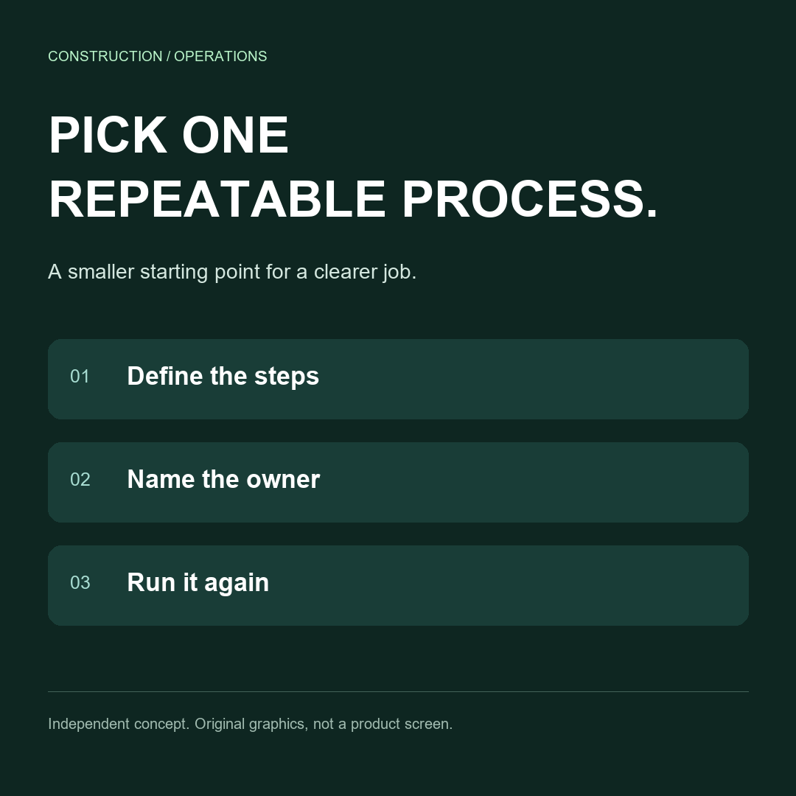
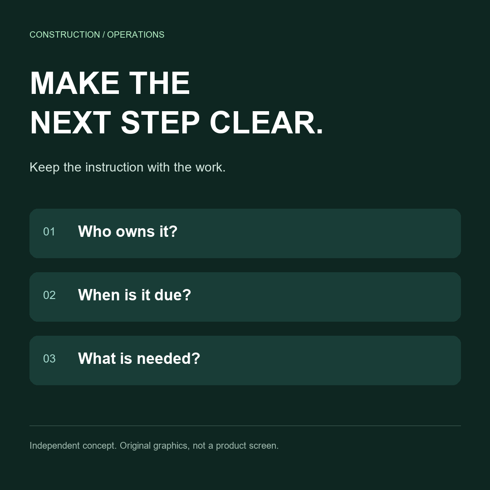
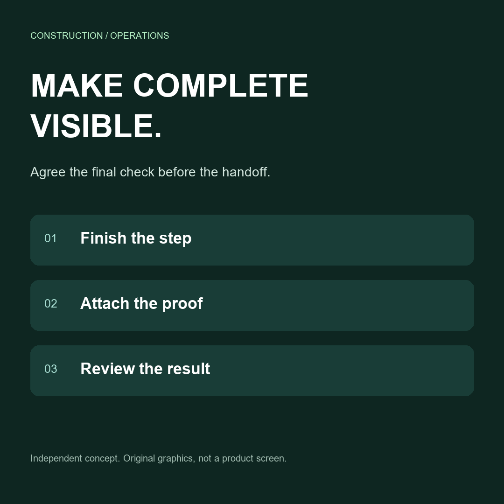

Independent sample, unsent
A clearer workflow. A usable content batch.
Three post concepts, square artwork, a vertical motion example and an editable production handoff.


MAKE THE NEXT STEP CLEAR.
Editable vector source

MAKE COMPLETE VISIBLE.
Editable vector source
24-second vertical motion concept.
Original typography and graphics. No audio, no copied footage and no product-screen claim.
Open MP4Production files
Post copy and handoff · Editable calendar · Caption source ·
Prepared from the public brief. Actual founder clips, publishing and a monthly scope require the buyer's approved sources and agreement.